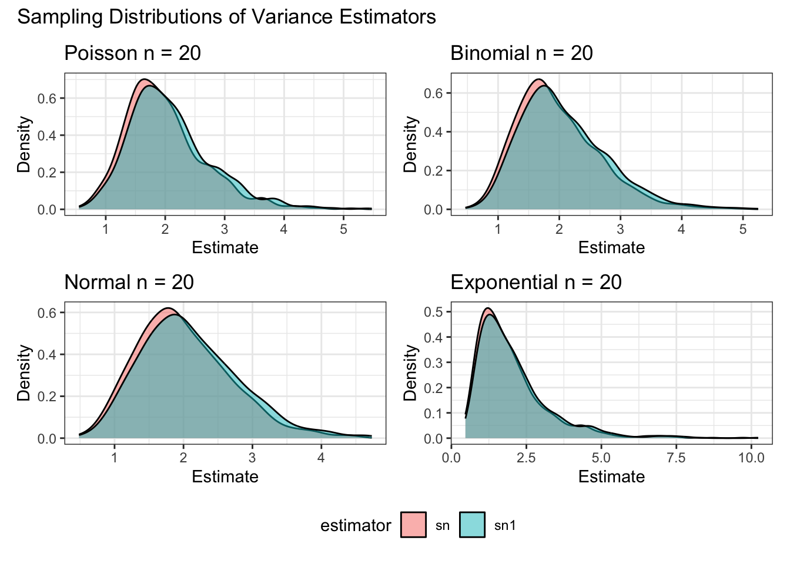
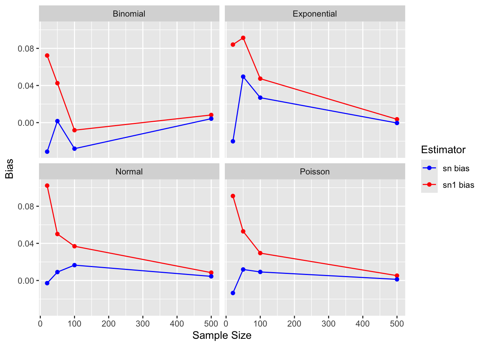
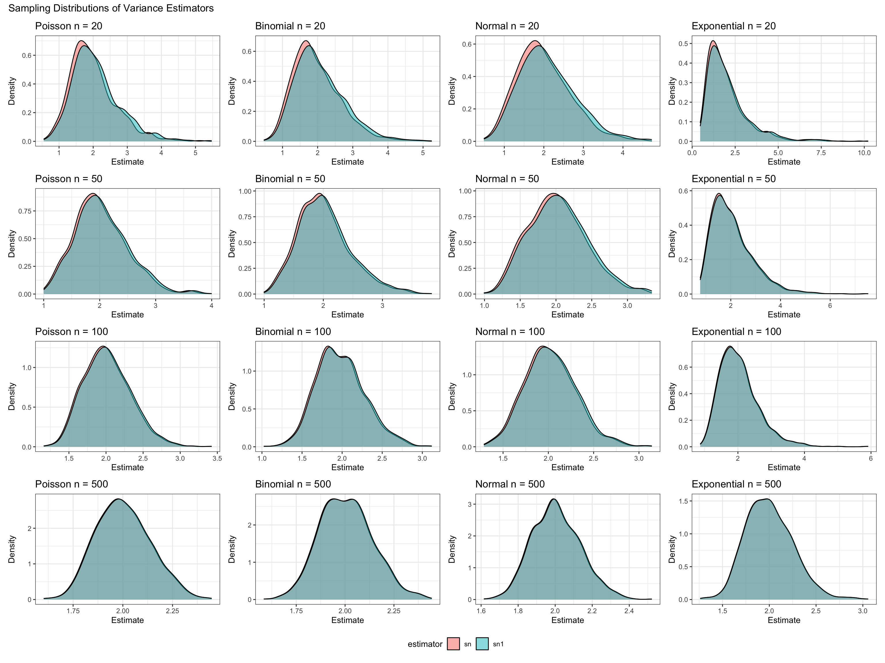
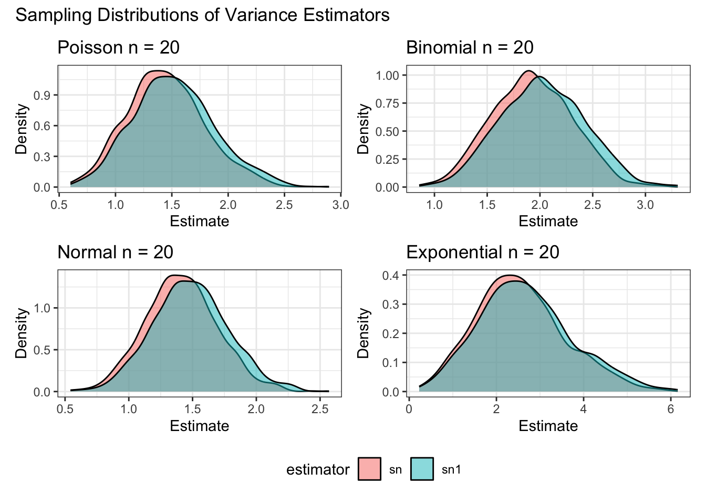
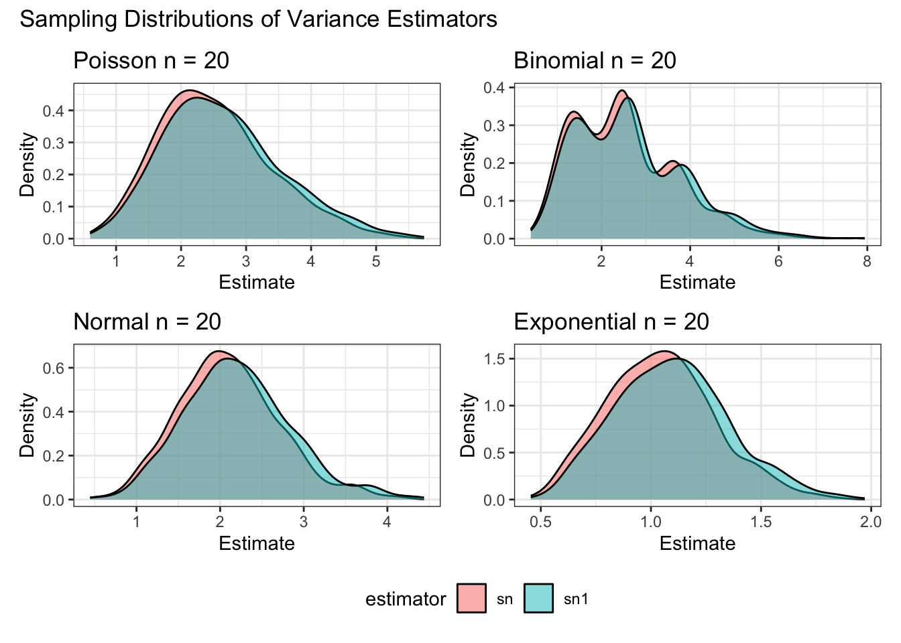
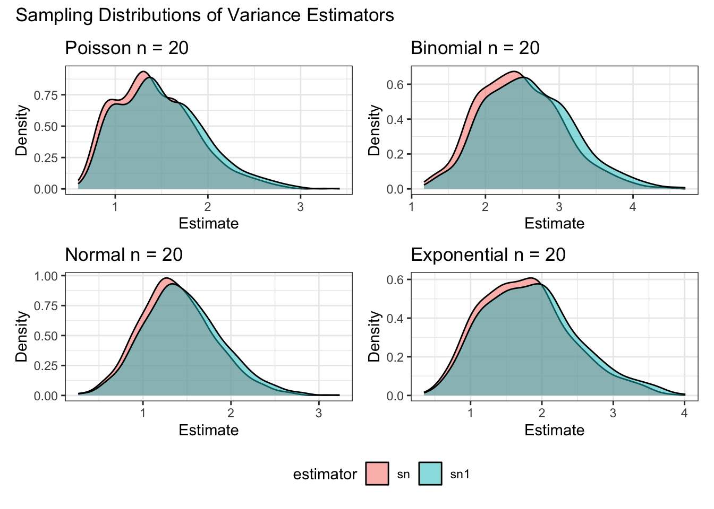
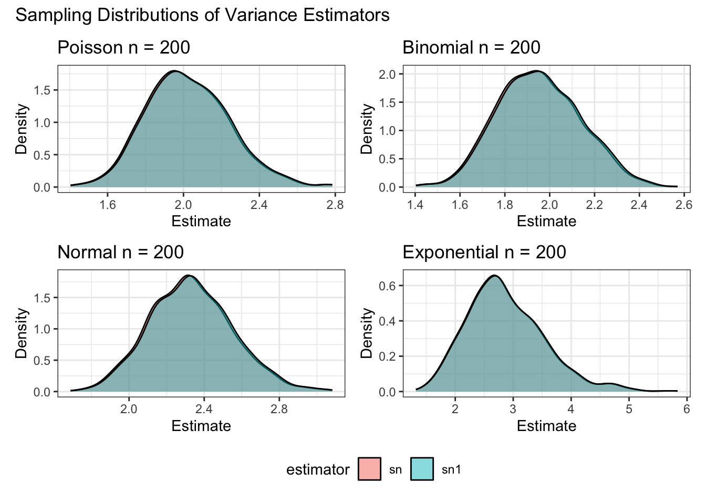

| distribution | sn1_bias | sn1_precision | sn1_mse | sn_bias | sn_precision | sn_mse |
|---|---|---|---|---|---|---|
| Poisson | 0.09 | 2.00 | 0.51 | -0.01 | 2.21 | 0.45 |
| Binomial | 0.07 | 1.98 | 0.51 | -0.03 | 2.19 | 0.46 |
| Normal | 0.10 | 1.93 | 0.53 | 0.00 | 2.14 | 0.47 |
| Exponential | 0.08 | 0.65 | 1.55 | -0.02 | 0.72 | 1.40 |
Lab Eleven – Point Estimation and Resampling
Tips
- Complete the tasks below. Make sure to start your solutions in on a new line that starts with “Solution:”.
- Make sure to use the Quarto Cheatsheet. This will make completing and writing up the lab much easier.
- Make sure to use “enter” to make your code readable, so it doesn’t run off the page. I switched the Quarto document to automatically render to .pdf, so you can see what you’re submitting by default. You can switch back for the highlighting by moving the html block above the pdf block in the YAML header.
- Don’t forget that you can copy-and-paste code when you’re doing something similar as we did in class!
- Make sure to plot all computed probabilities. This is good
ggplotpractice AND will help make sure you don’t make a mistake when computing the probability.
1 Introduction
When performing point estimation, there isn’t just one right answer. For example, the Method of Moments (MOM) and Maximum Likelihood Estimates (MLEs) aren’t always the same.
One question that comes up, is why we calculate the sample variance as \[S_{n-1}^2 = \frac{1}{n-1} \sum_{i=1}^n (X_i -\bar{X})^2,\] when it is supposed to be the ``average squared distance from the mean, i.e., \[S_n^2 = \frac{1}{n} \sum_{i=1}^n (X_i -\bar{X})^2.\]
2 Comparing Estimators
2.1 Initial Simulation
In this lab, we will explore why we use \(S_{n-1}^2\) and not \(S_n^2\). To do this, we will generate data from four known distributions:
- Poisson\((\lambda=2)\)
- Binomial\(\left(n=50, p=\frac{5-\sqrt{21}}{10}\right)\)
- Normal\((\mu=0, \sigma=\sqrt{2})\)
- Exponential\(\left(\lambda = \frac{1}{\sqrt{2}}\right).\)
Remark: Note that I have selected the parameters so that the true variance for all four models is 2.
For each distribution, write a loop that completes the following 1000 times. Put set.seed(7272) at the top of your code chunk.
- Generate a sample of size \(n\) from the distribution.
- Calculate and save \(S_{n-1}^2\) and \(S_n^2.\)
Start with \(n=20\). Is there evidence that \(S_{n-1}^2\) is a better estimator than \(S_n^2\)?
Create a plot or combination of plots (using patchwork) to show the results across all four distributions. Make sure to create a corresponding table that numerically summarizes the results of the simulation. You should include \[\begin{align*} \textrm{Bias} &= \textrm{Average of Estimates} - \textrm{True Value}\\ \textrm{Precision} &= \frac{1}{\textrm{Variance of Estimates}}\\ \textrm{Mean Square Error} &= \textrm{Bias}^2 + \textrm{Variance of Estimates}. \end{align*}\]

With a sample size of \(20\), there is not convincing evidence that the \(S_{n-1}^2\) is a better estimator than \(S_n^2\).
2.2 Simulation over various sample sizes
Consider the effect of the sample size have on these results. Provide a graphical and numerical summary of what happens as \(n\) increases – say \(n=20\), \(n=50\), \(n=100\), and \(n=500\). Does the result in your initial simulation hold across samples? Or, do things change as the sample size changes? Ensure to set your randomization seed.
| distribution | sampleSize | sn1_bias | sn1_precision | sn1_mse | sn_bias | sn_precision | sn_mse |
|---|---|---|---|---|---|---|---|
| Poisson | 20 | 0.09 | 2.00 | 0.51 | -0.01 | 2.21 | 0.45 |
| Binomial | 20 | 0.07 | 1.98 | 0.51 | -0.03 | 2.19 | 0.46 |
| Normal | 20 | 0.10 | 1.93 | 0.53 | 0.00 | 2.14 | 0.47 |
| Exponential | 20 | 0.08 | 0.65 | 1.55 | -0.02 | 0.72 | 1.40 |
| Poisson | 50 | 0.05 | 4.31 | 0.23 | 0.01 | 4.49 | 0.22 |
| Binomial | 50 | 0.04 | 4.91 | 0.21 | 0.00 | 5.12 | 0.20 |
| Normal | 50 | 0.05 | 5.87 | 0.17 | 0.01 | 6.12 | 0.16 |
| Exponential | 50 | 0.09 | 1.34 | 0.75 | 0.05 | 1.40 | 0.72 |
| Poisson | 100 | 0.03 | 9.86 | 0.10 | 0.01 | 10.06 | 0.10 |
| Binomial | 100 | -0.01 | 10.73 | 0.09 | -0.03 | 10.95 | 0.09 |
| Normal | 100 | 0.04 | 12.15 | 0.08 | 0.02 | 12.40 | 0.08 |
| Exponential | 100 | 0.05 | 2.81 | 0.36 | 0.03 | 2.86 | 0.35 |
| Poisson | 500 | 0.01 | 53.64 | 0.02 | 0.00 | 53.86 | 0.02 |
| Binomial | 500 | 0.01 | 54.18 | 0.02 | 0.00 | 54.40 | 0.02 |
| Normal | 500 | 0.01 | 58.57 | 0.02 | 0.00 | 58.80 | 0.02 |
| Exponential | 500 | 0.00 | 15.46 | 0.06 | 0.00 | 15.52 | 0.06 |
Code
#| echo: false
#| label: fig-2.2-bias
#| fig-cap: Estimator Bias by Sample Size Across Distribution
plot = df |>
ggplot() +
geom_line(aes(x = sampleSize, y = sn1_bias, colour = "sn1 bias")) +
geom_line(aes(x = sampleSize, y = sn_bias, colour = "sn bias")) +
geom_point(aes(x = sampleSize, y = sn1_bias, colour = "sn1 bias")) +
geom_point(aes(x = sampleSize, y = sn_bias, colour = "sn bias")) +
scale_colour_manual(
name = "Estimator",
values = c("sn1 bias" = "#FF0000",
"sn bias" = "#0000FF")
) +
labs(x = "Sample Size", y = "Bias") +
facet_wrap(~distribution)
(plot) 

2.3 Simulation
You have written code to draw a random sample of various sizes from each distribution, and to calculate and store the calculated estimates. Rework your code to produce a density plot of the \(s_{n-1}^2\) and \(s_{n}^2\). Do you have a guess about their distribution? Ensure to set your randomization seed.
Solution
I previously generated density plots. As shown in Figure 2 The plots look pretty normal, and tend to look more normal as sample size increases.
2.4 Bootstrap
Now, take one sample from each distribution. Instead of drawing a random sample at each iteration, sample with replacement from the one sample. Produce a density plot of the \(s_{n-1}^2\) and \(s_{n}^2\). Do we get roughly the same information as we do in the full simulation? Try this over several seeds – what do you notice? Ensure to set your randomization seed.
Solution
Code
bootstrap.sample.variances = function(n,size, distribution,mean) {
sn1 = c()
sn = c()
sample.orig = distribution(size)
for (i in 1:n) {
sample.virtual = sample(sample.orig,size,replace=T)
difference.squared = (sample.virtual - mean)^2
total = sum(difference.squared)
sn1 = c(sn1,(1 / (size - 1)) * total)
sn = c(sn,(1 / size) * total)
}
list(sn1 = sn1, sn = sn, sn1_mean = mean(sn1), sn1_var = var(sn1), sn_mean = mean(sn), sn_var = var(sn))
}
gen.boostrapped.variances.df = function(sizes,distributions,true_variance) {
map(sizes, function(size) {
distributions |>
rowwise() |>
mutate(
sampleSize = size,
sim = list(bootstrap.sample.variances(num.sims, size, func, mean)),
sn1_mean = sim[["sn1_mean"]],
sn1_var = sim[["sn1_var"]],
sn_mean = sim[["sn_mean"]],
sn_var = sim[["sn_var"]],
sn1_bias = sn1_mean - true_variance, #fixed
sn1_precision = 1 / sn1_var,
sn1_mse = sn1_bias^2 + sn1_var,
sn_bias = sn_mean - true_variance, #fixed
sn_precision = 1 / sn_var,
sn_mse = sn_bias^2 + sn_var
) |>
ungroup()
}) |>
list_rbind()
}



Yes, Bootstrapping shows fairly similar density plots as traditional sampling. Though by comparing Figure 3 and Figure 4 we can see that the difference between our two estimators with a small sample size is influenced by our choice of random seed. Still, given the plots it is reasonable to conclude that bootstrapping captured most of the information from the full sample.
3 Executive Summary
Summarize the work you’ve done here to provide a brief (200-300 word) summary of the simulation and the results using your work in Lab 11. Your summary should be professional, clear, and all claims should be corroborated with statistical support.
Solution
In this lab, we compared the sample variance and population variance estimators across four distributions using their bias, precision, and mean squared errors. In addition to these standard estimator metrics, we plot the density of estimates across sample size to demonstrate the convergence of the estimators as sample size increases.
Principally, we expect that as sample size increases, our estimators converge since \(\lim_{n \to \infty}{\frac{1}{n}} = \lim_{n \to \infty}{\frac{1}{n-1}}\). Our results in Figure 2 are consistent with this, since the density of the curves are increasingly overlapping. Our density plots across sample sizes also suggest the normal distribution as the limiting distribution of our estimates. We also show in Table 2 and ?@fig-2.2-bias that the magnitude of bias decreases toward zero across distribution as sample size increases for both estimators, with the sample variance having a positive bias for smaller samples, while the population variance had a negative bias for smaller samples. We also find that precision increases with sample size, consistent with a decrease in variance for large samples.
In addition to these results, our limited evaluation of the utility of bootstrapping demonstrated that bootstrapped sample have similar properties to regular samples, and we show in Figure 5 and Figure 6 that as sample size increases, bootstrapped samples have the same trend toward normality and regular samples.